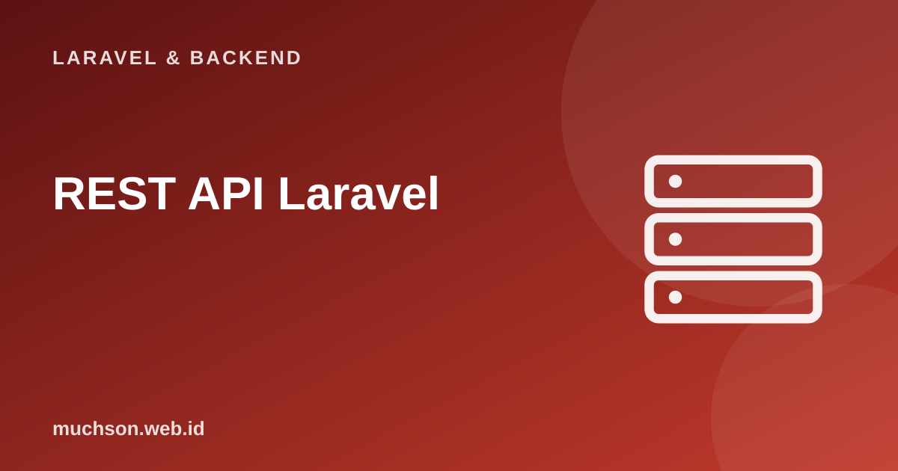

Beranda › Artikel › Laravel & Backend
Laravel & BackendREST API Laravel: Resource Controller, API Resource, Paginasi
API adalah cara aplikasi berbicara dengan aplikasi lain: aplikasi seluler Flutter, front-end React, atau layanan pihak ketiga. API yang baik konsisten, dapat ditebak, dan jujur lewat kode status. Laravel menyediakan semua komponennya; yang perlu Anda kuasai adalah merancangnya dengan baik.
Sebaiknya sudah paham: dasar Laravel, Eloquent, validasi

Setelah membaca dan mencoba materi ini, Anda mampu:
- mendefinisikan rute dan resource controller untuk API
- memakai API Resource untuk mengontrol bentuk JSON
- memakai kode status HTTP dan format galat yang konsisten
- menerapkan paginasi, penyaringan, dan pengurutan
- menerapkan prinsip desain REST dan pembuatan versi
Kode PHP/Laravel di artikel ini ditampilkan sebagai contoh yang mengikuti dokumentasi Laravel (versi 11 dan seterusnya, PHP 8.2 atau lebih baru). Bagian "cara kerja di balik layar" dijalankan sungguhan dengan Python atau JavaScript agar konsepnya dapat dibuktikan.
Prinsip REST yang praktis
| Aksi | Metode & URL | Status sukses |
|---|---|---|
| Daftar produk | GET /api/v1/produk | 200 |
| Detail produk | GET /api/v1/produk/5 | 200 |
| Buat produk | POST /api/v1/produk | 201 Created |
| Ubah penuh / sebagian | PUT atau PATCH /api/v1/produk/5 | 200 |
| Hapus | DELETE /api/v1/produk/5 | 204 No Content |
- URL adalah kata benda jamak (produk), metode HTTP adalah kata kerjanya; hindari /ambilProduk atau /hapusProduk.
- Status code berarti: 200/201/204 sukses, 400 permintaan buruk, 401 belum login, 403 dilarang, 404 tidak ada, 422 validasi gagal, 429 terlalu banyak permintaan, 500 galat server.
- Stateless: setiap permintaan membawa semua yang dibutuhkan (token), server tidak menyimpan sesi per klien.
- JSON konsisten: bentuk respons dan galat seragam di seluruh endpoint.
Menyiapkan API di Laravel
php artisan install:api # membuat routes/api.php dan memasang Laravel Sanctum
php artisan make:model Produk -mfc --api
php artisan make:resource ProdukResource
php artisan make:request SimpanProdukRequest<?php
// routes/api.php
use App\Http\Controllers\Api\ProdukController;
Route::prefix('v1')->group(function () {
Route::get('produk', [ProdukController::class, 'index']); // publik
Route::get('produk/{produk}', [ProdukController::class, 'show']);
Route::middleware('auth:sanctum')->group(function () { // butuh token
Route::post('produk', [ProdukController::class, 'store']);
Route::put('produk/{produk}', [ProdukController::class, 'update']);
Route::delete('produk/{produk}', [ProdukController::class, 'destroy']);
});
});
// atau: Route::apiResource('produk', ProdukController::class); (lima rute tanpa create/edit)API Resource: bentuk JSON yang Anda kendalikan
Mengembalikan model langsung (return $produk;) membocorkan setiap kolom basis data dan mengikat klien pada struktur tabel. API Resource adalah lapisan transformasi yang menentukan persis apa yang keluar.
<?php
// app/Http/Resources/ProdukResource.php
class ProdukResource extends JsonResource
{
public function toArray(Request $request): array
{
return [
'id' => $this->id,
'nama' => $this->nama,
'harga' => $this->harga,
'tersedia' => $this->stok > 0, // nilai turunan
'kategori' => new KategoriResource($this->whenLoaded('kategori')), // hanya bila sudah dimuat (hindari N+1)
'dibuat' => $this->created_at->toIso8601String(),
];
}
}
// Controller
public function index(Request $request)
{
$produk = Produk::query()
->with('kategori')
->when($request->filled('kategori'), fn ($q) => $q->where('kategori_id', $request->integer('kategori')))
->when($request->filled('q'), fn ($q) => $q->where('nama', 'like', '%' . $request->string('q') . '%'))
->orderBy($request->string('urut', 'nama')->toString())
->paginate(15);
return ProdukResource::collection($produk); // sertakan meta paginasi otomatis
}
public function store(SimpanProdukRequest $request)
{
$produk = Produk::create($request->validated());
return (new ProdukResource($produk))->response()->setStatusCode(201);
}
public function destroy(Produk $produk)
{
$produk->delete();
return response()->noContent(); // 204
}Bentuk respons paginasi
// Meniru perhitungan paginasi yang dilakukan paginate(): total, halaman, offset
function paginasi(total, perHalaman, halaman) {
const terakhir = Math.max(1, Math.ceil(total / perHalaman));
const sekarang = Math.min(Math.max(1, halaman), terakhir);
const offset = (sekarang - 1) * perHalaman;
return {
data: '(baris ' + (total ? offset + 1 : 0) + ' sampai ' + Math.min(offset + perHalaman, total) + ')',
meta: { current_page: sekarang, last_page: terakhir, per_page: perHalaman, total },
links: { prev: sekarang > 1 ? '/api/v1/produk?page=' + (sekarang - 1) : null, next: sekarang < terakhir ? '/api/v1/produk?page=' + (sekarang + 1) : null },
};
}
console.log(JSON.stringify(paginasi(47, 15, 1)));
console.log(JSON.stringify(paginasi(47, 15, 4)));
console.log(JSON.stringify(paginasi(47, 15, 99))); // halaman di luar rentang dijepit ke halaman terakhir
console.log(JSON.stringify(paginasi(0, 15, 1)));{"data":"(baris 1 sampai 15)","meta":{"current_page":1,"last_page":4,"per_page":15,"total":47},"links":{"prev":null,"next":"/api/v1/produk?page=2"}}
{"data":"(baris 46 sampai 47)","meta":{"current_page":4,"last_page":4,"per_page":15,"total":47},"links":{"prev":"/api/v1/produk?page=3","next":null}}
{"data":"(baris 46 sampai 47)","meta":{"current_page":4,"last_page":4,"per_page":15,"total":47},"links":{"prev":"/api/v1/produk?page=3","next":null}}
{"data":"(baris 0 sampai 0)","meta":{"current_page":1,"last_page":1,"per_page":15,"total":0},"links":{"prev":null,"next":null}}Format galat yang konsisten
const http = require('node:http');
// Server kecil yang mencontohkan kode status dan bentuk galat yang konsisten
const produk = new Map([[1, { id: 1, nama: 'Kopi', harga: 65000 }]]);
const kirim = (res, status, badan) => { res.writeHead(status, { 'Content-Type': 'application/json' }); res.end(badan === undefined ? '' : JSON.stringify(badan)); };
const server = http.createServer((req, res) => {
const m = req.url.match(/^\/api\/v1\/produk(?:\/(\d+))?$/);
if (!m) return kirim(res, 404, { pesan: 'Rute tidak ditemukan' });
const id = m[1] && Number(m[1]);
if (req.method === 'GET' && !id) return kirim(res, 200, { data: [...produk.values()] });
if (req.method === 'GET') return produk.has(id) ? kirim(res, 200, { data: produk.get(id) }) : kirim(res, 404, { pesan: 'Produk tidak ditemukan' });
if (req.method === 'DELETE') return produk.delete(id) ? kirim(res, 204) : kirim(res, 404, { pesan: 'Produk tidak ditemukan' });
return kirim(res, 405, { pesan: 'Metode tidak diizinkan' });
});
server.listen(0, async () => {
const dasar = 'http://127.0.0.1:' + server.address().port + '/api/v1/produk';
for (const [metode, jalur] of [['GET', ''], ['GET', '/1'], ['GET', '/9'], ['DELETE', '/1'], ['DELETE', '/1'], ['PATCH', '/1']]) {
const r = await fetch(dasar + jalur, { method: metode });
const teks = await r.text();
console.log((metode + ' /produk' + jalur).padEnd(18), r.status, teks.slice(0, 60));
}
server.close();
});GET /produk 200 {"data":[{"id":1,"nama":"Kopi","harga":65000}]}
GET /produk/1 200 {"data":{"id":1,"nama":"Kopi","harga":65000}}
GET /produk/9 404 {"pesan":"Produk tidak ditemukan"}
DELETE /produk/1 204
DELETE /produk/1 404 {"pesan":"Produk tidak ditemukan"}
PATCH /produk/1 405 {"pesan":"Metode tidak diizinkan"}Pembuatan versi dan keamanan API
- Versi di URL (/api/v1/...) agar perubahan yang merusak dapat dirilis sebagai v2 tanpa memutus klien lama.
- Autentikasi token (Sanctum atau OAuth lewat Passport), dan otorisasi per sumber daya (policy).
- Pembatasan laju (rate limiting) dengan middleware
throttleuntuk mencegah penyalahgunaan: respons 429. - HTTPS saja, dan jangan menaruh token di URL.
- Dokumentasi: OpenAPI/Swagger (misalnya Scribe atau Scramble) agar tim front-end tahu kontraknya.
- CORS dikonfigurasi di config/cors.php untuk asal klien yang sah saja.
1. Rancang endpoint untuk mengelola komentar pada produk.
2. Mengapa mengembalikan model langsung dari controller berisiko?
3. Apa gunanya whenLoaded pada Resource?
4. Kapan paginasi kursor lebih baik daripada offset?
- REST: URL kata benda jamak, metode HTTP sebagai aksi, stateless, status code bermakna.
- apiResource dan API Resource menghasilkan rute CRUD dan JSON yang dikontrol; whenLoaded menghindari N+1.
- Paginasi, filter, dan urutan dibatasi daftar yang diizinkan; format galat konsisten.
- Versi API, token (Sanctum), rate limiting, HTTPS, CORS, dan dokumentasi OpenAPI.
Tanya jawab
Apa bedanya PUT dan PATCH?
Haruskah memakai GraphQL?
Bagaimana menguji API?
Referensi
- Laravel: Eloquent API Resources
- Laravel: Routing (apiResource)
- MDN: HTTP response status codes
- Microsoft: RESTful web API design